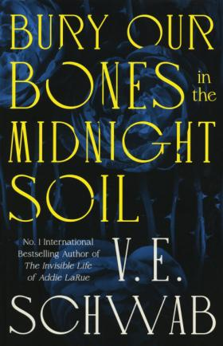
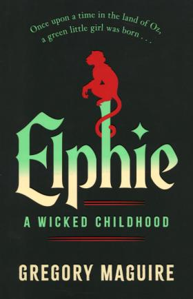
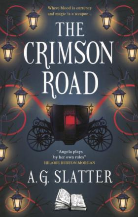
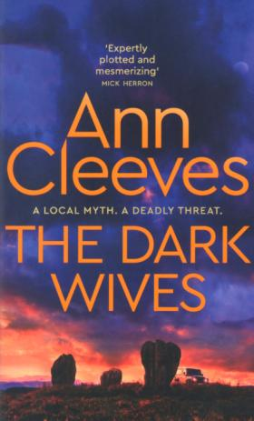
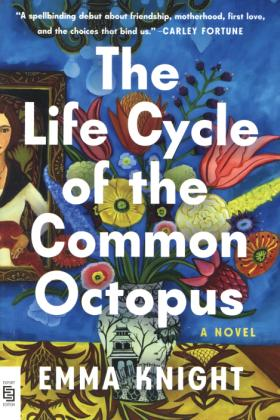

Resultaat 5 van 847
> Gareth, BrownThe book of doors
Boek - Engels - 2025 - 497 pagina's; 20 cm
Science fiction
Thriller
2 stem(men)
Onderwerp
Inhoud
Een New Yorkse boekverkoper komt in het bezit van een magisch boek dat van elke deur een portaal maakt naar een plek naar keuze. Maar ze weet niet dat er meer magische boeken zijn en dat een groot kwaad op pad is om ze allemaal te bemachtigen...
Tabs
-
Hier aanwezig
Toon exemplaren in de buurtAantal Status Vestiging Kast 1x Aanwezig Almere-Stad Het nieuwe plein - Nieuw: enge BROWN -
Titelblok The book of doors, Boek, (Brown, Gareth) Uitgave London : Bantam, 2024 Collatie 407 pagina's ; 24 cm Inhoud Een New Yorkse boekverkoper komt in het bezit van een magisch boek dat van elke deur een portaal maakt naar een plek naar keuze. Maar ze weet niet dat er meer magische boeken zijn en dat een groot kwaad op pad is om ze allemaal te bemachtigen... ISBN 9781787637252 Auteur Brown, Gareth Materiaal Boeken Volw verh. Taal Engels Mediumsoort Boek Publicatiejaar 2024 Soort classificatie Verhalend, Volwassen Genre Science fiction, Thriller Titel The book of doors SISO enge Onderwerpen Boeken Demonen Magie Goed en kwaad Aanschafinfo Een fantasyverhaal in een moderne setting over boeken met magische krachten. Cassie Andrews, een boekverkoper uit New York, ontdekt een magisch boek na de plotselinge dood van een trouwe klant. Het boek stelt haar in staat om door elke deur te stappen en op elke gewenste locatie te verschijnen. Dit is het begin van een groots avontuur, maar Cassie ontdekt al snel dat er meer magische boeken bestaan die zowel prachtige als gevaarlijke krachten hebben. Samen met haar huisgenoot Izzy raakt ze verstrikt in een wereld vol geweld en gevaar. De enige persoon die hen kan helpen, Drummond Fox, bezitter van een geheime bibliotheek vol magische boeken, is op de vlucht voor zijn eigen demonen. Er is een kwaad dat alle boeken wil bezitten, en Cassie's boek is er een om voor te sterven. Met vaart, sfeervol en toegankelijk geschreven. ‘The book of doors’ is het romandebuut van Gareth Brown.. Titelnummer 1033244 -
Meld je aan om een recensie te schrijven
Er zijn nog geen recensies voor deze titel
-
Deze titel staat in geen enkele Community-lijst
-
Log in om een tag te kunnen toevoegen, te wijzigen of te verwijderen
Er zijn nog geen tags voor deze titel
Eerder bekeken
-

Bury our bones in the midnight soilV.E. Schwab
-

Elphie : a wicked childhoodGregory Maguire
-

The crimson roadAngela Slatter
-

The dark wivesAnn Cleeves
-

The life cycle of the common octopusEmma Knight